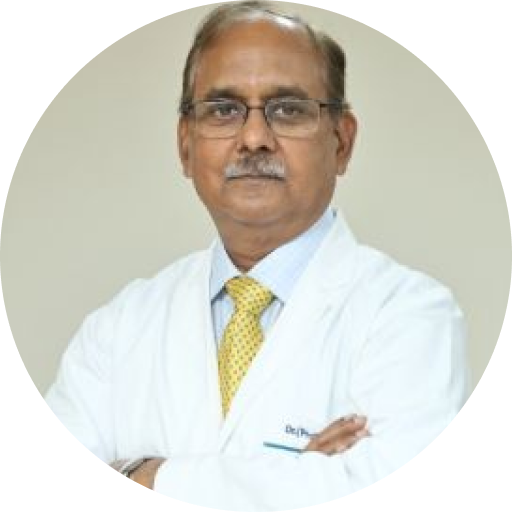
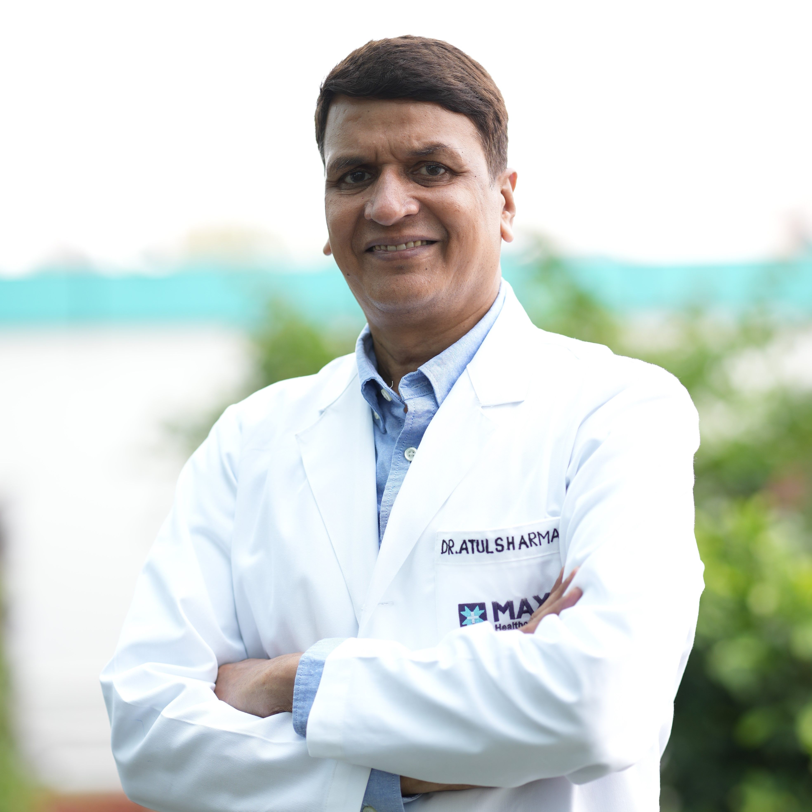
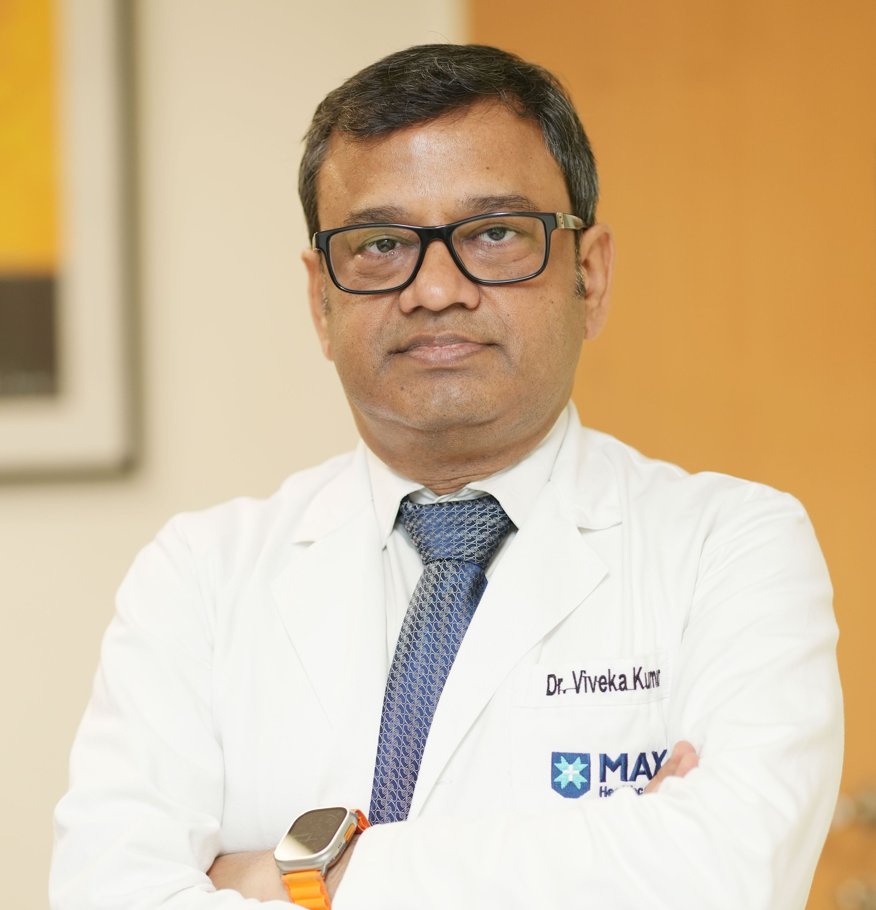
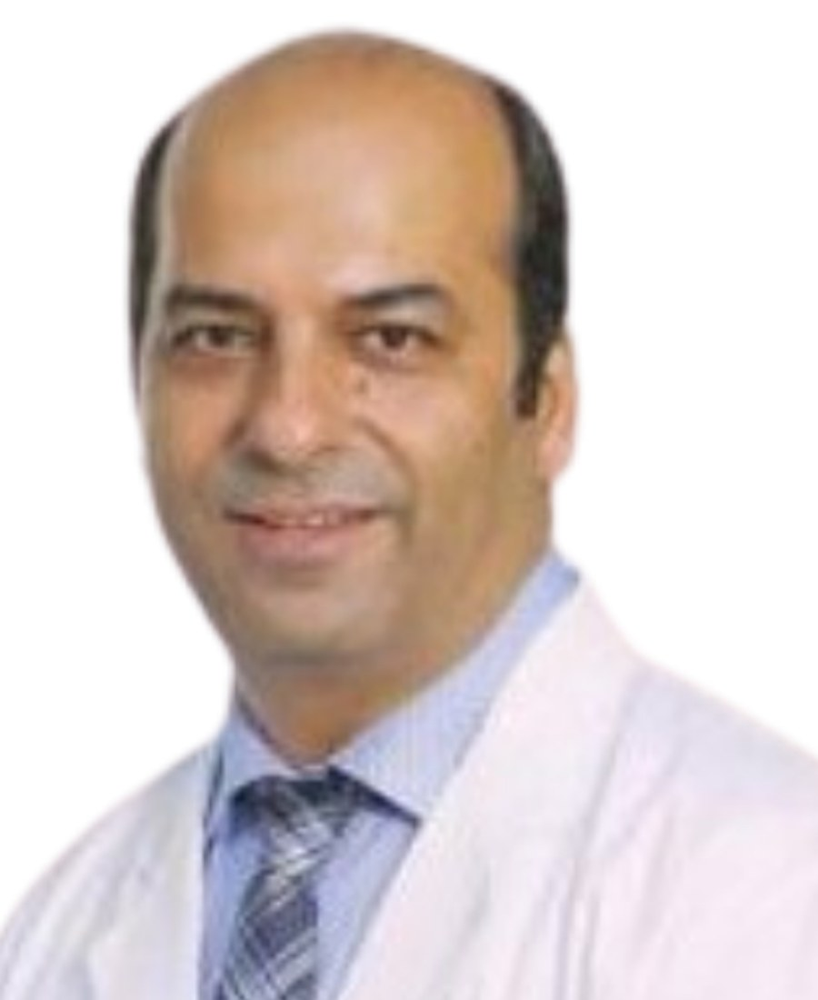

د. أنانت كومار
المسالك البولية · زراعة الكلى · الجراحة الروبوتية
ماكس، ساكيت
استعرض مجموعة من الأطباء والتخصصات التي يمكن لفريق علاج مي إنديا المساعدة في تنسيق الاستفسار بشأنها. يتم تأكيد بيانات الطبيب والجهة الطبية وتوفر الموعد أثناء مراجعة الحالة.
ابدأ الاستفسار
المسالك البولية · زراعة الكلى · الجراحة الروبوتية
ماكس، ساكيت

طب الأورام
ماكس، ساكيت

أمراض القلب · القلب التداخلي
ماكس، ساكيت

طب الأورام
فورتيس، غوروغرام
رئيس قسم المسالك البولية · جراحة المسالك الروبوتية · زراعة الكلى
فورتيس ميموريال ريسيرش إنستيتيوت، غوروغرام
المدير الرئيسي لأمراض الجهاز الهضمي · الكبد والقنوات الصفراوية
فورتيس ميموريال ريسيرش إنستيتيوت، غوروغرام
طب الأورام · خبرة سريرية تزيد على 35 عاماً
مستشفى إندرابراستا أبولو، دلهي